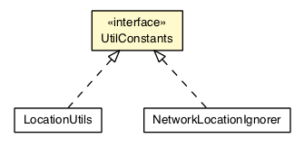

JavaScript is disabled on your browser.
Overview
Package
Class
Tree
Deprecated
Index
Help
Prev Class
Next Class
Frames
No Frames
All Classes
Summary:
Nested |
Field
|
Constr |
Method
Detail:
Field
|
Constr |
Method
org.osmdroid.util.constants
Interface UtilConstants

All Known Implementing Classes:
LocationUtils
,
NetworkLocationIgnorer
public interface
UtilConstants
Field Summary
Fields
Modifier and Type
Field and Description
static long
GPS_WAIT_TIME
The time we wait after the last gps location before using a non-gps location.
Field Detail
GPS_WAIT_TIME
static final long GPS_WAIT_TIME
The time we wait after the last gps location before using a non-gps location.
See Also:
Constant Field Values
Overview
Package
Class
Tree
Deprecated
Index
Help
Prev Class
Next Class
Frames
No Frames
All Classes
Summary:
Nested |
Field
|
Constr |
Method
Detail:
Field
|
Constr |
Method